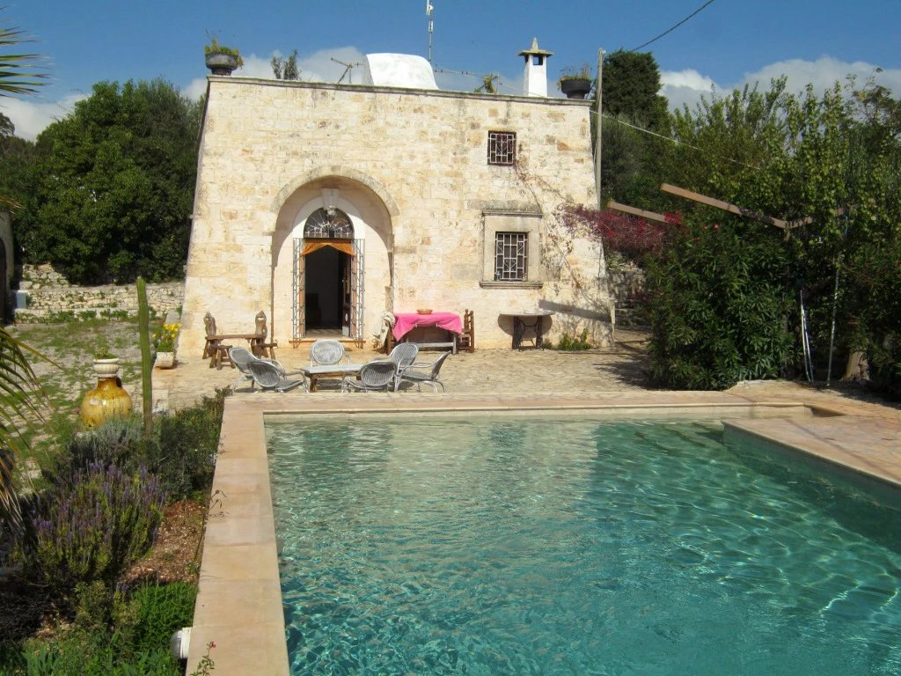

€345.000
Ostuni / Contrada Cavalerizza · Puglia · Italy
Exact Puglia brief at a punch-above price: restored exposed-stone casale (lamia-style) with original stone floors, vine pergola, and a confirmed built private 5×10 pool on ~6.000 m² countryside land - old mixed with new, habitable now, not a project or possibilità piscina.
Opened 29 Sep 2026 on Ostuni Domus; asking €345.000; Rif. 80; Stato Buono; Superficie 120 m²; Terreno 6.000 m²; 2 beds / 1 bath; energy class G. Ground floor: two bedrooms, bath, open kitchen; exterior vine pergola with stone dining table, Mediterranean planting, and built 5×10 pool.
Open listing